Kapitel 6 Optimierung
Ökonomische Modelle basieren häufig auf der Idee, dass ein Entscheidungsträger auf Basis möglicher Alternativen eine optimale Entscheidung trifft.
Wir formalisieren optimale Entscheidungen als Maximieren oder Minimieren einer Funktion.
Zum Beispiel:
Eine Firma möchte die Produktionskosten minimieren oder den Profit maximieren;
Ein Verbraucher möchte seinen Nutzen maximieren;
Ein (politischer) Entscheidungsträger möchte die soziale Wohlfahrt maximieren.
Optimierung ist zentral für Ökonomie, BWL, Management, Strategie, …
In diesem Kapitel behandeln wir die Optimierung von Funktionen einer Variablen; Funktionen mehrerer Veränderlicher folgen später.
6.1 Notwendige Bedingungen für Maxima und Minima
Optimieren einer Funktion \(f (x), x \in D\), bedeutet, den Wert \(x\) zu finden, an dem ein Extremwert (auch Extremum) vorliegt; dieser kann ein Maximum oder ein Minimum sein.
Im Fall \(D=\mathbb{R}\) liegt ein Optimierungsproblem ohne Nebenbedingungen vor.
Definition 6.1 (Maximum, Minimum)
- Die Funktion \(f\) hat an der Stelle \(x ^∗\) ein globales Maximum, falls gilt:
\(f (x^∗ ) \geq f (x)\) für alle \(x\).
Illustration
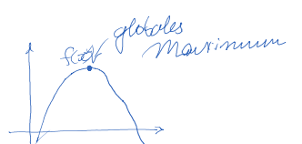- Ein lokales Maximum liegt an der Stelle \(\hat{x}\) vor, falls es ein \(\epsilon >0\)gibt mit
\(f ( \hat {x}) \geq f (x)\) für \(\hat {x} − \epsilon \leq x \leq \hat {x} + \epsilon\).
Illustration
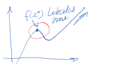- Analog hat \(f\) an der Stelle \(x^ ∗\) ein globales Minimum, falls gilt:
\(f (x^ ∗ ) \leq f (x)\) für alle \(x\).
Illustration
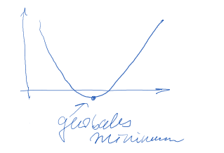- Ein lokales Minimum liegt an der Stelle \(\hat {x}\) vor, falls es ein \(\epsilon >0\) gibt mit
\(f ( \hat {x}) \leq f (x)\) für \(\hat {x} − \epsilon \leq x \leq \hat {x} + \epsilon\).
Illustration
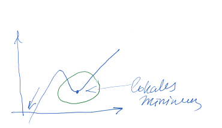Folgendes Theorem gibt uns die notwendige Bedingung für ein lokales Maximum und ein lokales Minimum.
Theorem 6.1 (Bedingung erster Ordnung) Wenn die differenzierbare Funktion \(f\) an der Stelle \(x^*\) einen Extremwert besitzt, dann gilt: \(f^\prime (x^ ∗ ) = 0\).
Diese Gleichung nennt man auch Bedingung erster Ordnung (BEO).
Es handelt sich um eine notwendige Bedingung.
Mit anderen Worten: Gilt \(f' (x) \neq 0\), dann hat \(f\) kein Extremum in \(x\).
Die Bedingung erster Ordnung ist keine hinreichende Bedingung, d.h. die Umkehrung gilt nicht!
Mit anderen Worten: Die Aussage “Falls \(f' (x^∗ ) = 0\), dann hat \(f\) ein Extremum an der Stelle \(x^ ∗\)” ist falsch.
Beispiel 6.1 (BEO ist keine hinreichende Bedingung) Man betrachte die Funktion \(f (x) = 16x − 4x^ 3 + x^ 4\) .
Die Ableitung ist
\(f' (x) = 16 − 12x^ 2 + 4x^ 3\) ,
und man überprüft leicht, dass \(f' (2) = 0\).
Der Graph zeigt, dass \(f\) kein Extremum an der Stelle \(x = 2\) hat.
Ein Punkt mit \(f' (x) = 0\), an dem kein Extremum vorliegt, heißt Wendepunkt.
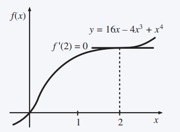
Um allen Punkten, in denen \(f'(x)=0\) eine Bezeichnung zu geben, führen wir die Definition von stationären Punkten ein.
Definition 6.2 (Stationärer Punkt) Es sei \(f\) eine differenzierbare Funktion. Jeder Punkt \(x\) mit \(f' (x) = 0\) ist ein stationärer Punkt. Ein stationärer Punkt ist entweder ein Extremum oder ein Wendepunkt.
Ein Anwendungsbeispiel betrifft Gewinnmaximierung von einer Monopolistin wie die Gitarrenmanufaktur.
Beispiel 6.2 (Monopol mit linearer Nachfrage und linearen Kosten) Ein Monopolist befindet sich in der folgenden Situation:
lineare Nachfrage \(x = 100 − p\) (\(x\) ist die Nachfrage, \(p\) ist der Preis);
lineare Kostenfunktion \(C(x) = 25x\).
Umformen der Nachfragefunktion zu \(p = 100 − x\) ergibt die folgende Gewinnfunktion:
\(\pi(x) = px − C = 100x − x^2 − 25x\).
Der Gewinn ist maximal an der Stelle \(x^ ∗\) mit
\(\pi' (x^ ∗ ) = 100 − 2x^∗ − 25 = 0\),
also
\(x^∗ = (100 − 25)/ 2 = 37,5\).
Der gewinnmaximierende Preis und der entsprechende Gewinn sind
\(p^∗ = 100 − x^∗ = 62,50\),
\(\pi^∗ = (62,50 − 25) 37,5 = 1.406,25\).
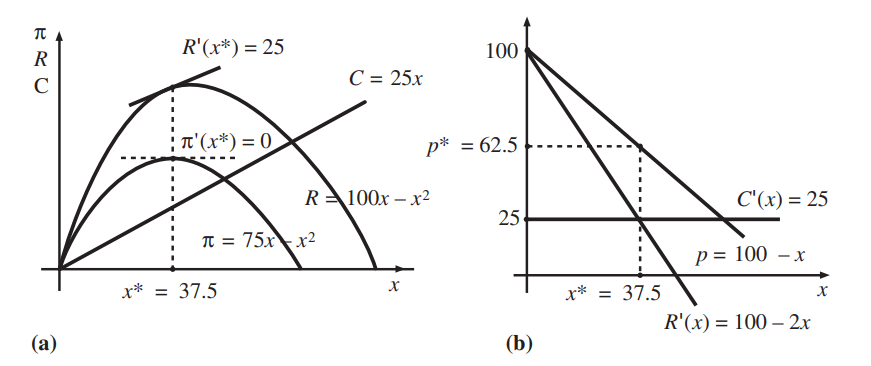
Der linke Graph zeigt:
den Gesamterlös \(R(x) = px = 100x − x^2\) die Gesamtkosten \(C(x) = 25x\) den Gewinn \(π(x) = (100 − 25)x − x^2 = 75x − x^ 2\) Der rechte Graph zeigt:
die Nachfrage \(p = 100 − x\) den Grenzerlös \(R' (x) = 100 − 2x\) die Grenzkosten \(C' (x) = 25\)
Aufgabe 6.1 (Extremwerte) Finde die Extremwerte von
\(f (x) = 2x^ 3 − 0,5x^ 2 + 2\)
\(f (x) = 4x^ 2 − 5x + 10\)
\(f (x) = 6x/(x^ 4 + 2)\)
\(f (x) = 0,5x^ 4 − 5x^ 3 + 2x^ 2\)
Antwort
- \(f (x) = 2x^ 3 − 0,5x^ 2 + 2\)
\(f'(x)=6x^2-x=0\) (BEO)
\(x(6x-1)=0\) \(\Leftrightarrow\) \({x}_{1}^* =0\);
\(6x-1=0 \Rightarrow {x}_{2}^{*}= \frac{1}{6}\)
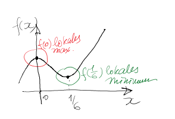
- \(f (x) = 4x^ 2 − 5x + 10\)
\(f'(x)=8x-5=0\) (BEO) \(\Leftrightarrow x^*= \frac{5}{8}\)
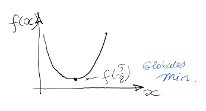
- \(f (x) = 6x/(x^ 4 + 2)\)
\(f'(x)= \frac{6(x^4+2)-6x(4x^3)}{(x^4+2)^2} =0\)
\(x^4=12/18=2/3\)
\(x^*_{1,2}= \pm \sqrt[4]{ \frac{2}{3} }\) \(= \pm 0,9036\)
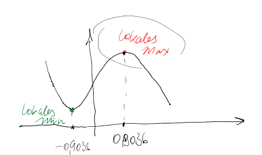
- \(f (x) = 0,5x^ 4 − 5x^ 3 + 2x^ 2\)
\(f'(x)=0,5 \cdot 4x^3-5 \cdot 3x^2+ 2 \cdot 2x=0\)
\(\Leftrightarrow x(x^2-15x+4)=0\)
\(x_1^*=0\)
\(x_{2}^*= \frac{15- \sqrt{193} }{4} = 0,2769\)
\(x_{3}^*= \frac{15+ \sqrt{193} }{4} = 7,2231\)
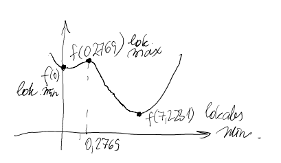
Eine Firma ist der einzige Produzent eines Produkts mit Kostenfunktion:
\[\displaystyle f(x)=100+20x+2x^2.\]
Falls die Firma den Preis erhöht, werden weniger Einheiten abgesetzt; der Preis \(p(x)\), ausgedrückt als Funktion der Anzahl an Einheiten \(x\), ist:
6.2 Bedingungen zweiter Ordnung
Zweite Ableitungen können determinieren, ob es sich bei einem stationären Punkt um ein Maximum oder ein Minimum handelt.
Die drei möglichen Fälle für stationäre Punkte sind auf den Grafiken unten dargestellt.
Graph (a) zeigt, dass im Fall eines Maximums, die Steigung der Funktion links des Maximums positiv ist (also für \(x < x^ ∗\) ), und dass sie rechts des Maximums negativ ist (\(x > x^ ∗\) ).
Dies wird durch die negative Steigung von \(f'\) an der Stelle \(x^ ∗\) erfasst (Graph (d)).
Für ein Minimum ist das Verhalten gerade umgekehrt (Graphen (b) und (e)).
Im Fall eines Wendepunkts (Graphen (c) und (f)) kann dieses Verhalten nicht auftreten.
Folglich ist \(f''(x^∗ ) = 0\). Die Funktion verändert sich von konkav zu konvex (oder andersherum).
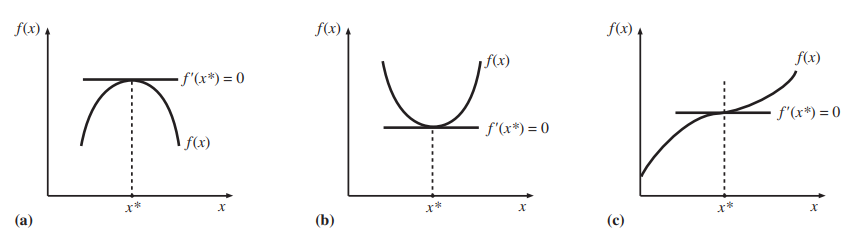
Theorem 6.2 (Hinreichende Bedingung für Maximum (Minimum)) Es sei \(f\) zweifach differenzierbar.
Falls \(f' (x^ ∗ ) = 0\) und \(f''(x ∗ ) < 0\), dann hat \(f\) ein lokales Maximum an der Stelle \(x^ ∗\) .
Falls \(f' (x^ ∗ ) = 0\) und \(''f(x^ ∗ ) > 0\), dann hat \(f\) ein lokales Minimum an der Stelle \(x^ ∗\) .
Das Theorem gibt hinreichende Bedingungen zur Bestimmung, ob es sich bei einem stationären Punkt um ein Minimum oder Maximum handelt.
Aufgabe 6.2 (Maximum oder Minimum) Bestimmen Sie für die folgende Funktion anhand der Bedingungen zweiter Ordnung, ob es sich bei einem Extremum um ein lokales Maximum oder lokales Minimum handelt.
\(f (x) = 2x^ 3 − 0,5x^ 2 + 2\)Antwort
\(f'(x)=6x^2-x=0\)
\(x(6x-1)=0 \rightarrow x_1^*=0 \text{ und }x_2^*=1/6\)
\(f''(x)=(6x^2)'=12x-1\)
\(x_1^*=0 : f''(x_1^*)=12 \cdot 0-1=-1<0\rightarrow\) lokales Maximum
\(x_2^*=1/6:f''(x_2^*)=12 \cdot(1/6)-1=1>0\rightarrow\) lokales Minimum
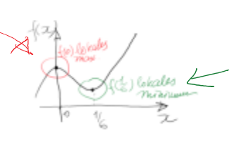Beispiel 6.3 (Approximative Maximierung von Gewinnfunktionen mit Taylor-Approximation) In Beispiel 5.7 betrachteten wir einen Monopolisten mit der Gewinnfunktion:
\[\pi(q) = 100\cdot \exp(-0.01 q) \cdot q - 1000 - q.\]
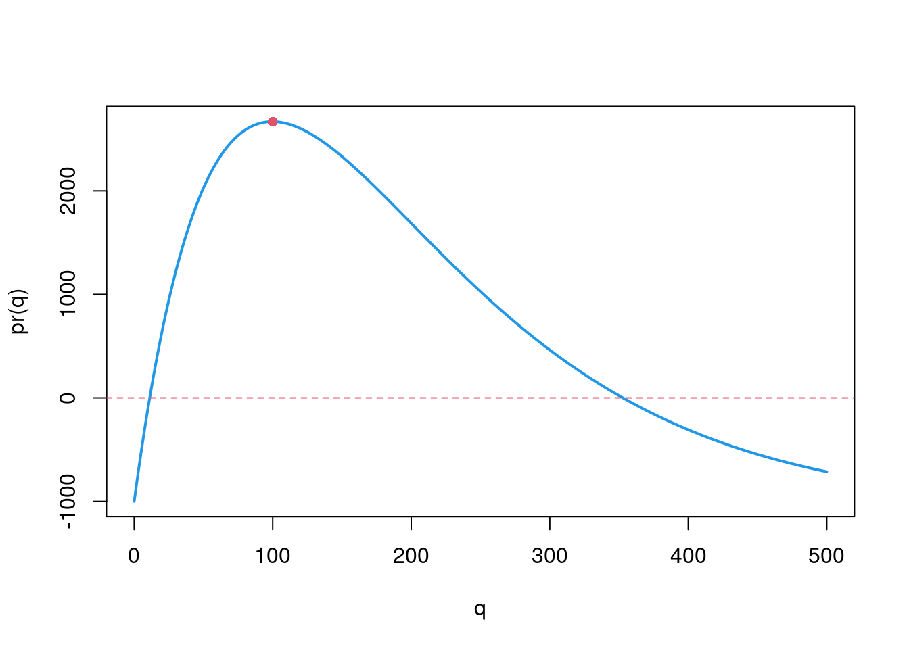
Um diese Gewinnfunktion zu maximieren, würden wir als Erstes ihre Ableitung gleich Null setzen.
Die Ableitung der Gewinnfunktion ist:
\[\pi^\prime(q) = (-1)\cdot\exp(-0,01q)\cdot q + 100\cdot\exp(-0,01q) - 1.\]
Leider können wir diese ABleitung nicht nach \(q\) umstellen! (Try it 🤯)
Wie können wir dann die optimale Produktionsmenge \(q^*\) herausfinden? \(\leadsto\) graphisch: die Stelle, wo das Maximum erreicht wird, befindet sich ungefähr bei \(q=100\). Aber können wir eine bessere Approximation ermitteln?
Wir approximieren die ABleitung \(\pi^\prime(q)\) via Taylor Approximation erster Ordnung um \(q_0=100\).
- Der Funktionswert von der Ableitung in \(q_0=100\) ist:
\[\pi^\prime(100) = (-1)\cdot \exp(-0.01\cdot 100)\cdot 100 + 100\cdot\exp(-0.01\cdot 100) - 1 = -1,\]
- Die Ableitung der Ableitung der Gewinnfunktion (hier \(\pi^{\prime\prime}(q)\)) ist:
\[\begin{align*}\pi^{\prime\prime}(q) &= 0.01\exp(-0.01q)\cdot q - \exp(-0.01q)+ 100(-0.01)\exp(-0.01q) \\ &= 0.01\exp(-0.01q)\cdot q - 2\exp(-0.01q).\end{align*}\]
Also \[\begin{align*}\pi^{\prime\prime}(q_0=100)&=0.01\exp(-0.01\cdot 100)\cdot 100 -2\exp(-0.01\cdot 100) \\ &= -\exp(-1)=-\frac1e.\end{align*}\]
Die Taylor Approximation erster Ordnung für die ABleitung der Gewinnfunktion lautet also:
\[\begin{align*}\pi^\prime(q) &\approx \pi^\prime(q_0) + \pi^{\prime\prime}(q_0)(q-q_0) \\ &=-1 - \frac 1e\cdot(q-100) \end{align*}\]
Wenn wir die resultierende Approximation gleich Null setzen, kriegen wir:
\[-1 - \frac 1e\cdot(q-100)=0\rightarrow q^*_{approx}=-e+100=97.2817.\]
D.h., die Gewinnfunktion ist näherungsweise im Maximum wenn \(q^*_{approx}=97.2817.\)
Nun können wir auch die Bedingung zweiter Ordnung für das Erreichen eines Maximums überprüfen:
\[\begin{align*}\pi^{\prime\prime}(q^*_{approx})&=0.01\exp(-0.01\cdot 97.2817)\cdot 97.2817 -2\exp(-0.01\cdot 97.2817) \\ &=-0.3883<0.\end{align*}\]
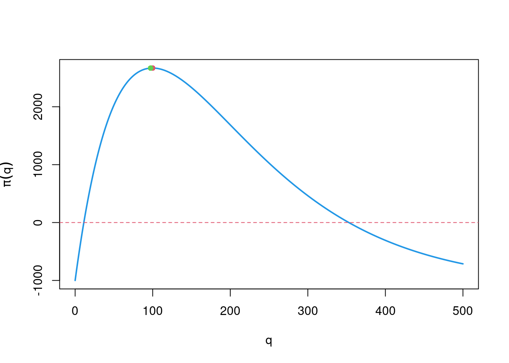
Unsere Approximation hat gut funktioniert. Das Ergebniss der Nullsetzung von Approximation der Gewinnableitung (grüner Punkt) liegt sehr nahe dem wahren Maximum (roter Punkt) in der obigen Abbildung der Gewinnfunktion.
6.3 Optimierung auf einem Intervall
In der Praxis sind die meisten Optimierungsprobleme unter Nebenbedingungen zu lösen, zum Beispiel:
eine Firma kann nur nicht-negative Mengen von Gütern produzieren;
eine Firma hat Kapazitätsbeschränkungen in der Produktion;
ein Konsument hat ein beschränktes Budget.
Beispiel 6.4 (Optimierung auf einem Intervall) Wir bestimmen \[\begin{equation*} \max_x f(x)=3-2x\quad\text{ unter der Bedingung } 0\leq x\leq 1. \end{equation*}\]
Der Fall ohne Nebenbedingung hat kein Extremum (\(f^\prime(x)=-2\), für alle \(x\)), also muss das Maximum auf einer der Intervallgrenzen liegen.
Da die Ableitung negativ ist, also die Funktion fallend ist, ist die Lösung die linke Grenze \(x^\ast=0\).
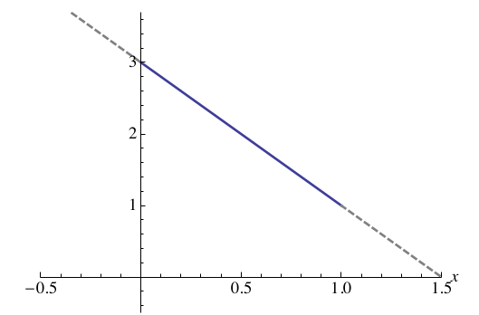
Die allgemeine Formulierung eines Optimierungsproblems unter
Nebenbedingungen (gegeben als Intervall) ist wie folgt:
\[\begin{equation}
\label{eq:2}
\max_x f(x)\quad\text{ unter der Bedingung }\quad a\leq x\leq b.
\end{equation}\]
Alternativ kann dies ausgedrückt werden als \[\begin{equation*} \max_{x\in [a,b]} f(x). \end{equation*}\]
Drei Fälle können als mögliche Lösungen des Maximierungsproblems auftreten:
\(x^\ast=a\): In diesem Fall gilt \(f^\prime(x^\ast)\leq 0\) (linker Graph)
\(a<x^\ast<b\): In diesem Fall \(f^\prime(x)=0\) (mittlerer Graph)
\(x^\ast=b\): In diesem Fall \(f^\prime(x^\ast)\geq 0\) (rechter Graph)
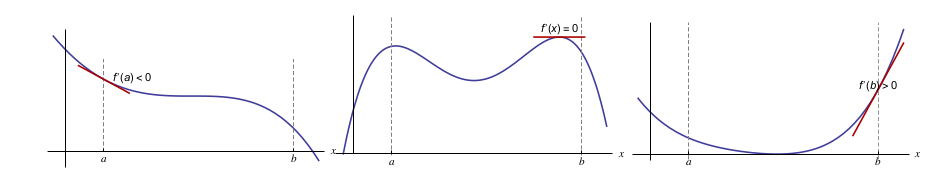
In den Fällen (i) und (iii) ist die Nebenbedingung bindend; in (ii) ist die Nebenbedingung nicht-bindend.
Die Lösung in (ii) wird innere Lösung genannt.
Der folgende Satz fasst die drei Situationen zusammen.
Theorem 6.3 (Maximierung unter Nebenbedingungen) Eine Lösung \(x^\ast\) des Problems \[\begin{equation*} \max_x f(x)\quad\text{ unter der Bedingung } a\leq x\leq b \end{equation*}\] erfüllt eine oder beide der folgenden Bedingungen: \[\begin{align*} \phantom{test test} % f^\prime(x^\ast)\leq 0&\quad\text{ und }\quad (x^\ast-a) f^\prime(x^\ast)=0\\ f^\prime(x^\ast)\geq 0&\quad\text{ und }\quad (b-x^\ast) f^\prime(x^\ast)=0. \end{align*}\] Falls beide Bedingungen erfüllt sind und darüberhinaus \(f^\prime(a)\not=0\), \(f^\prime(b)\not=0\) gilt, dann ist \(x^\ast\) eine innere Lösung, also \(a<x^\ast<b\).
Theorem 6.4 (Minimierung unter Nebenbedingungen) Eine Lösung \(x^\ast\) des Problems \[\begin{equation*} \min_x f(x)\quad\text{ unter der Bedingung } a\leq x\leq b, \end{equation*}\] erfüllt eine oder beide der folgenden Bedingungen: \[\begin{align*} \phantom{test test} % f^\prime(x^\ast)\geq 0&\quad\text{ und }\quad (x^\ast-a) f^\prime(x^\ast)=0\\ f^\prime(x^\ast)\leq 0&\quad\text{ und }\quad (b-x^\ast) f^\prime(x^\ast)=0. \end{align*}\] Falls weiterhin beide Bedingungen erfüllt sind und darüberhinaus \(f^\prime(a)\not=0\), \(f^\prime(b)\not=0\) gilt, dann ist \(x^\ast\) eine innere Lösung, also \(a<x^\ast<b\).
Für die praktische Bestimmung des Maximums/ des Minimums führt man die folgenden Schritte durch:
- bestimme die Ableitung von \(f(x)\);
- schaue, welche der beiden Bedingungen aus den Theoremen @ref(thm: thmmaxneb) und 6.4 (je nach dem, ob man maximieren oder minimieren soll) gelten und
- löse nach \(x\) auf.
- Abschlissend, prüfe, ob die resultierende Werte für \(x\) aus dem Zielintervall liegen und
- vergleich die Funktionswerte, falls du mehrere \(x\)-Werte erhalten hast. Der kleinste (größte) Funktionswert bestimmt dann das Minimum (Maximum).
Alternativ, kann man
- alle lokalen Maxima und Minima für die Zielfunktion bestimmen;
- Die dazu gehörigen \(x\)-Werte, die auch auf dem Zielintervall liegen werden als Kandidaten für Min (Max) betrachtet.
- Anschliessend, vergleicht man die Funktionswerte, die lokale Min (Max) darstellen mit den Randwerten \(f(a),f(b)\). Der kleinste (größte) Funktionswert bestimmt dann das Minimum (Maximum).
Aufgabe 6.3 (Minimum und Maximum unter Nebenbedingungen) Lösen Sie die folgenden Probleme:
\(\max_x (3 + 2x)\) unter der Bedingung \(0 ≤ x ≤ 10\)
\(\max_x (1 + 10x^ 2)\) unter der Bedingung \(5 ≤ x ≤ 20\)
\(\min_x (5 − x^ 2)\) unter der Bedingung \(0 ≤ x ≤ 10\)
Antwort
- \(\max_{0 \leq x \leq 10 }3+2x\)
Da \(f'(x)=(3+2x)'=2>0\), schliessen wir:
\(f' (x^ ∗ ) ≤ 0\) und \((x^ ∗ − a)f' (x^ ∗ ) = 0\) gilt nicht;
\(f' (x^ ∗ ) ≥ 0\) gilt und daher muss \((b − x^ ∗ )f' (x^ ∗ ) = 0\) gerfüllt sein und deshalb berechnen wir:
\[(10-x) \cdot 2=0 \Leftrightarrow 20-2x=0 \Rightarrow x^*=10.\]
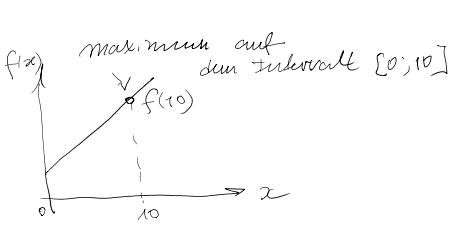
- \(\max_{5 \leq x \leq 20 }1+10x^2\)
Da \(f'(x)=(1+10x^2)'=20x>0 \ für \ 5 \leq x \leq 20\), stellen wir fest:
\(f' (x^ ∗ ) ≤ 0\) und \((x^ ∗ − a)f' (x^ ∗ ) = 0\) gilt nicht;
\(f' (x^ ∗ ) ≥ 0\) und \((b − x^ ∗ )f' (x^ ∗ ) = 0\) gilt, deshalb:
\[(20-x) \cdot 20x=0 \Rightarrow x_1^*=20, x_2^* =0\]
Aber: \(x_2^*\not\in [5;20]!\) Also bleibt \(x_1^*=20\) die einzige Lösung.
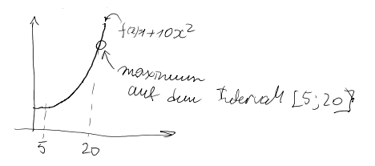
- \(\min_{0 \leq x \leq 10 }5-x^2\)
Da \(f'(x)=(5-x^2)'= -2x<0\) für \(0 ≤ x ≤ 10\), stellt man fest:
\(f' (x^ ∗ ) ≥ 0\) und \((x^ ∗ − a)f' (x^ ∗ ) = 0\) gilt nicht
\(f' (x^ ∗ ) ≤ 0\) und \((b − x^ ∗ )f' (x^ ∗ ) = 0\) gilt, deshalb:
\[(10-x)(-2x)=0 \rightarrow x_1^*=0, x_2^*=10\]
Da \(f(x_1^*=0)=5-0^2=5>f(x_2^*=10)=5-10^2=-95,\) wird das Minimum in \(x_2^*\) erreicht.
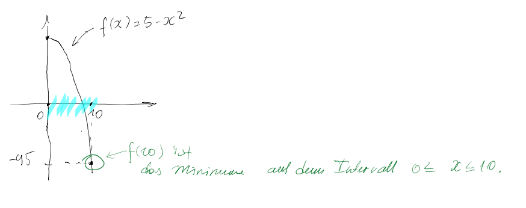
Frage: